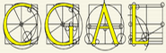
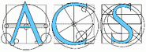

EXACUS Algebraic curves rendering


max planck institut
informatik
List of curve segments:
qwedqwefqwefqwef
qwedqwefqwefqwef
qwedqwefqwefqwef
qwedqwefqwefqwef
qwedqwefqwefqwef
qwedqwefqwefqwef
qwedqwefqwef qwehfdqwhefqhwefoiuqhwpuefqupwihfj qwefqwhefpuqhweupfhiqwef
qwedqwefqwefqwef
Input polynomial [e.g.
(x^2 - 2)*y^2 - 3*x + 2]:
Coords: (0, 0)
rasterize complete curve
rasterize in one-color
Segment renderer (default)
1D Space subdivision
For examples of how to enter polynomial equations, please visit our
Algebraic Curves Gallery
Max-Planck-Institut für Informatik,
EXACUS project